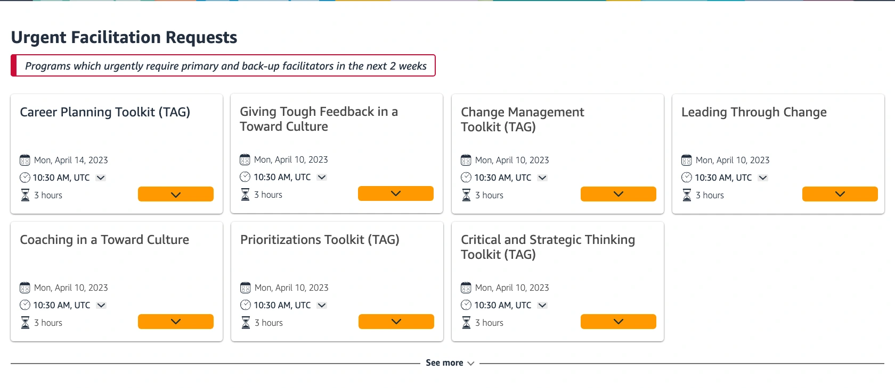

01 / Facilitator scheduling
Less coordination.
A clearer way to sign up.
18 → 8 hrs/week
Program-coordination time
Product-level outcome
A decision that mattered
Make the need
to act explicit.
8 of 9test participants missed the urgency of the original heading.
Facilitator experienceDesign detail

Clearer wording, tied to a real staffing need.
A shared workflow for facilitators and program managers, refined around the places users got stuck.
My contribution UX/UI design · Prototyping · Usability testing
Supplied design artifact · Cropped detail, not a confirmed final-release screen